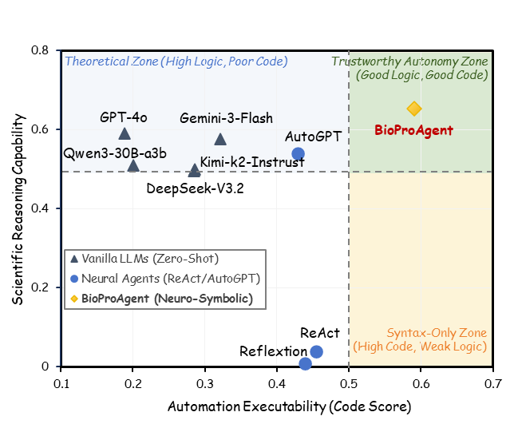

<!DOCTYPE html>
<html lang="zh-CN">
<head>
  <meta charset="utf-8">
  <meta name="viewport" content="width=device-width, initial-scale=1">
  <title>BioProSuite锛氭櫤鑳戒綋涓庡熀鍑嗘祴璇?/title>

  <link href="https://fonts.googleapis.com/css?family=Google+Sans|Noto+Sans|Castoro" rel="stylesheet">
  <link rel="stylesheet" href="https://cdn.jsdelivr.net/npm/bulma@0.9.4/css/bulma.min.css">
  <link rel="stylesheet" href="https://cdnjs.cloudflare.com/ajax/libs/font-awesome/6.4.0/css/all.min.css">
  <link rel="stylesheet" href="https://cdn.jsdelivr.net/gh/jpswalsh/academicons@1/css/academicons.min.css">

  <style>
    body { font-family: 'Noto Sans', 'PingFang SC', 'Microsoft YaHei', sans-serif; background-color: #fcfcfc; }
    
    /* 鏍囬閮ㄥ垎浼樺寲 */
    .publication-title {
      font-family: 'Google Sans', sans-serif;
      font-weight: 700;
      font-size: 2.8rem;
      background: linear-gradient(to right, #209cff, #68e0cf);
      -webkit-background-clip: text;
      -webkit-text-fill-color: transparent; 
      display: inline-block;
    }
    
    .publication-authors { font-size: 1.2rem; margin-top: 15px; }
    .publication-authors a { color: #333; transition: color 0.3s; }
    .publication-authors a:hover { color: #209cff; }
    
    /* 鎸夐挳缁?*/
    .link-block a {
      color: #363636;
      border: 1px solid #dcdcdc;
      background: #fff;
      transition: all 0.2s ease;
    }
    .link-block a:hover {
      background: #363636;
      color: #fff;
      border-color: #363636;
    }

    /* 瑙嗛瀹瑰櫒 */
    .video-container {
      border-radius: 10px;
      overflow: hidden;
      box-shadow: 0 10px 25px rgba(0,0,0,0.1);
      border: 1px solid #eee;
      background: #000;
    }
    
    /* News 鍖哄煙 */
    .news-box {
      background-color: #f0f7ff;
      border-left: 5px solid #209cff;
      padding: 15px 20px;
      border-radius: 5px;
      margin-bottom: 30px;
      text-align: left;
    }
    .news-title { font-weight: bold; color: #1c5b8d; margin-bottom: 5px; }
    .news-item { font-size: 0.95rem; margin-bottom: 3px; }

    /* 琛ㄦ牸鏍峰紡 */
    .table-container {
      margin-top: 20px;
      border-radius: 8px;
      box-shadow: 0 5px 15px rgba(0,0,0,0.05);
      overflow: hidden;
    }
    .table thead th {
      background-color: #f5f5f5;
      color: #333;
      border-bottom: 2px solid #ddd;
    }
    .leaderboard-table { font-size: 0.88rem; }
    .subset-panel { display: none; }
    .subset-panel.is-active { display: block; }
    .result-figure {
      width: 100%;
      max-width: 760px;
      height: auto;
    }
    @media (max-width: 768px) {
      .result-figure { max-width: 100%; }
    }

    /* 绔犺妭閫氱敤鏍峰紡 */
    .section-header { text-align: center; margin-bottom: 40px; }
    .container.is-max-desktop { max-width: 960px; }
    
    /* 鍥剧墖鑷€傚簲 */
    .content img {
      border-radius: 8px;
      box-shadow: 0 4px 10px rgba(0,0,0,0.08);
      max-width: 100%;
    }
    
   /* 瀵艰埅鏍忎笌骞虫粦婊氬姩浼樺寲 */
    html { scroll-behavior: smooth; }
    .navbar { border-bottom: 1px solid #eaeaea; box-shadow: 0 2px 4px rgba(0,0,0,0.05); }
    /* 闃叉閿氱偣璺宠浆鏃惰椤堕儴鍥哄畾瀵艰埅鏍忛伄鎸?*/
    section { scroll-margin-top: 4rem; }

  </style>
</head>

<body class="has-navbar-fixed-top">

<nav class="navbar is-fixed-top" role="navigation" aria-label="main navigation">
  <div class="container is-max-desktop">
    <div class="navbar-brand">
      <a class="navbar-item" href="#" style="font-weight: bold; font-family: 'Google Sans', sans-serif; font-size: 1.2rem; color: #363636;">
        BioProSuite
      </a>
    </div>
    <div class="navbar-menu is-active" style="box-shadow: none; background: transparent;">
      <div class="navbar-start">
        <a class="navbar-item" href="#abstract">摘要</a>
        <a class="navbar-item" href="#dataset">数据集</a>
        <a class="navbar-item" href="#Leaderboard">排行榜</a>
        <a class="navbar-item" href="#extend-bioprobench">Extend</a>
        <a class="navbar-item" href="#Method">方法</a>
        <a class="navbar-item" href="#BibTeX">BibTeX</a>
      </div>
      <div class="navbar-end">
        <div class="navbar-item">
          <a href="index.html" class="button is-small is-light is-rounded">
            <span class="icon"><i class="fas fa-globe"></i></span>
            <span>English</span>
          </a>
        </div>
      </div>
    </div>
  </div>
</nav>

<section class="hero" id="hero">
  <div class="hero-body" style="padding-top: 1rem;">
    <div class="container is-max-desktop">
      <div class="columns is-centered">
        <div class="column has-text-centered">
          
          <h1 class="title is-1 publication-title">
            BioProSuite
          </h1>
          <h3 class="subtitle is-4" style="color: #666; margin-top: 10px;">
            杩堝悜鍙潬鐨勮嚜涓诲寲婀垮疄楠?          </h3>
          
          <div class="is-size-5 publication-authors">
            <span class="author-block"><a href="https://yuyangsunshine.github.io/" target="_blank"><strong>鍒樺畤闃?/strong></a><sup>1,2</sup>,</span>
            <span class="author-block">鍚曞垬姝ｆ旦<sup>1,2</sup>, 寮犲鎴?sup>1,2</sup>, 姹潤闆?sup>1,2</sup>,</span>
            <span class="author-block">琚佺矑<sup>1,2</sup>, 鐢版案楦?sup>1,2</sup></span>
          </div>
          
          <div class="is-size-6 publication-authors">
            <span class="author-block"><sup>1</sup>鍖椾含澶у,</span>
            <span class="author-block"><sup>2</sup>鍖椾含澶у娣卞湷鐮旂┒鐢熼櫌</span>
          </div>

          <div class="publication-links" style="margin-top: 25px;">
            <span class="link-block">
              <a href=".https://arxiv.org/html/2603.00876v1" class="button is-rounded">
                <span class="icon"><i class="fas fa-file-pdf"></i></span>
                <span>Agent 璁烘枃</span>
              </a>
            </span>
            <span class="link-block">
              <a href="https://arxiv.org/abs/2505.07889" class="button is-rounded">
                <span class="icon"><i class="fas fa-file-pdf"></i></span>
                <span>Benchmark 璁烘枃</span>
              </a>
            </span>
            <span class="link-block">
              <a href="https://github.com/YuyangSunshine/bioprotocolbench" class="button is-rounded">
                <span class="icon"><i class="fab fa-github"></i></span>
                <span>浠ｇ爜</span>
              </a>
            </span>
            <span class="link-block">
              <a href="https://huggingface.co/BioProBench" class="button is-rounded">
                <span class="icon"><i class="fas fa-database"></i></span>
                <span>鏁版嵁</span>
              </a>
            </span>
            <span class="link-block">
              <a href="#Leaderboard" class="button is-rounded">
                <span class="icon"><i class="fas fa-chart-bar"></i></span>
                <span>鎺掕姒?/span>
              </a>
            </span>
            <span class="link-block">
              <a href="https://ai4slab.pkusz.edu.cn/" target="_blank" class="button is-rounded is-link is-light" style="border-color: #3273dc;">
                <span class="icon"><i class="fas fa-flask"></i></span>
                <span>鍦?AI4S LAB 璇曠敤</span>
              </a>
            </span>
          </div>

        </div>
      </div>
    </div>
  </div>
</section>

<section class="section" id="latest" style="padding-top: 0;">
  <div class="container is-max-desktop">
    <div class="news-box">
      <div class="news-title"><i class="fas fa-bullhorn"></i> 鏈€鏂板姩鎬?/div>

      <div class="news-item">
        馃敩 <strong>[2026-04-01]</strong> ICML Rebuttal 鏇存柊锛氭垜浠柊澧炰簡 <strong>gpt-5.4-2026-03-05</strong>銆?strong>gemini-3-flash-preview-nothinking</strong>銆?strong>claude-sonnet-4-5-20250929</strong> 鍦?PQA/ERR/ORD/GEN 鍥涢」浠诲姟涓婄殑璇勬祴缁撴灉銆?      </div>

      <div class="news-item">
        馃敟 <strong>[2026-03-18]</strong> 鎴戜滑鐨?BioProAgent 宸插湪 AI4S LAB 骞冲彴姝ｅ紡涓婄嚎锛?a href="https://ai4slab.pkusz.edu.cn/" target="_blank"><strong>娆㈣繋鍓嶅線浣撻獙骞朵笅鍗曡嚜鍔ㄥ寲婀垮疄楠?/strong></a>銆?      </div>

      <div class="news-item">
        馃帀 <strong>[2026-03-03]</strong> 鎴戜滑鐨?BioProAgent 琚?a href="https://lifelongagent.github.io/" target="_blank"><strong>ICLR 2026 LLA Workshop</strong>鎺ユ敹锛?/a>銆?      </div>
      
      <div class="news-item">
        馃搫 <strong>[2026-03-01]</strong> BioProAgent 鐨勮鏂囬鍗版湰宸插湪 <a href="https://arxiv.org/abs/2603.00876" target="_blank">arXiv</a> 鍙戝竷銆?      </div>
      
      <div class="news-item">
        馃摑 <strong>[2026-01-21]</strong> 鎴戜滑鐨?BioProBench 璁烘枃杩涜浜嗘洿鏂般€?      </div>
      
      <div class="news-item">
        馃殌 <strong>[2025-12]</strong> 浠ｇ爜涓庢暟鎹泦 (v1.0) 宸插湪 GitHub 寮€婧愬彂甯冦€?      </div>
      
    </div>
  </div>
</section>

<section class="section" id="video" style="padding-top: 0;">
  <div class="container is-max-desktop">
    <div class="columns is-centered">
      <div class="column is-full">
        <div class="video-container">
          <video autoplay muted loop playsinline controls width="100%">
            <source src="./video/ai4slab.mp4" type="video/mp4">
          </video>
        </div>
        <div class="content has-text-centered" style="margin-top: 15px; color: #555;">
          <p>
            <strong>AI4S LAB</strong>锛氬叏鐞冮涓€滀竴绔欏紡鈥濇暟瀛楁櫤鑳界敓鍛界瀛︾爺绌跺钩鍙般€?            AI4S LAB 娣卞害铻嶅悎绠楀姏銆佹暟鎹€佹ā鍨嬩笌瀹為獙锛屽疄鐜颁簡鈥滅悊璁洪娴?鈫?瀹為獙璁捐 鈫?鑷姩鍖栨墽琛?鈫?鏁版嵁鍒嗘瀽鈥濈殑瀹屾暣闂幆銆?          </p>
          <div style="margin-top: 15px;">
            <a href="https://ai4slab.pkusz.edu.cn/" target="_blank" class="button is-info is-outlined is-rounded">
              <span class="icon"><i class="fas fa-external-link-alt"></i></span>
              <span>璁块棶骞冲彴骞朵綋楠岃嚜鍔ㄥ寲婀垮疄楠?/span>
            </a>
          </div>
        </div>
      </div>
    </div>
  </div>
</section>

<section class="section" id="method" style="background-color: #f5f5f5;">
  <div class="container is-max-desktop">
    <div class="columns is-centered has-text-centered">
      <div class="column is-four-fifths">
        <h2 class="title is-3">鐮旂┒鎽樿</h2>
        <div class="content has-text-justified">
          <p>
            澶у瀷璇█妯″瀷锛圠LMs锛夊湪澶勭悊瀵瑰噯纭€ц姹傛瀬楂樼殑鐢熺墿瀹為獙鑽夋锛圥rotocols锛夋椂缂轰箯鍙潬鎬э紝杩欎弗閲嶉樆纰嶄簡绉戝瀹為獙鐨勮嚜鍔ㄥ寲杩涚▼銆?            涓烘锛屾垜浠鍏堝紩鍏ヤ簡鍖呭惈 55 涓囦换鍔″疄渚嬬殑 <strong>BioProBench</strong> 鍩哄噯娴嬭瘯锛屼互鎻ず鐜版湁妯″瀷鐨勬帹鐞嗛缚娌燂紱杩涜€屾彁鍑轰簡绁炵粡绗﹀彿鏅鸿兘浣撴鏋?<strong>BioProAgent</strong>銆?            閫氳繃灏嗘鐜囨€х殑瑙勫垝杩囩▼閿氬畾鍦ㄧ‘瀹氭€х殑鏈夐檺鐘舵€佹満锛團SM锛変腑锛屾垜浠殑鏅鸿兘浣撹兘澶熺‘淇濈‖浠舵搷浣滅殑鐗╃悊鍚堣鎬э紝骞跺湪鎬ц兘涓婃樉钁楄秴瓒婁簡浠?GPT-4 涓轰唬琛ㄧ殑鍩哄噯妯″瀷銆?          </p>
        </div>
      </div>
    </div>
  </div>
</section>

<section class="section" id="dataset">
    <div class="container is-max-desktop">
      <div class="columns is-centered has-text-centered">
        <div class="column is-four-fifths">
        <h2 class="title is-3">馃К 鏁版嵁闆? BioProBench</h2>
        <div class="content has-text-justified">
          <p>
            鎴戜滑鎻愬嚭浜?BioProBench锛岃繖鏄涓笓娉ㄤ簬鐢熺墿瀹為獙鑽夋杩囩▼鎺ㄧ悊鐨勫ぇ瑙勬ā璧勬簮搴撱€傚畠鍖呭惈涓€涓敱杩?<strong>27,000 浠?/strong>涓撲笟瀹為獙鑽夋缁勬垚鐨勮鏂欏簱 (BioProCorpus)锛屼互鍙婄敱姝よ鐢熷嚭鐨勮秴杩?<strong>550,000 涓粨鏋勫寲瀹炰緥</strong>锛岃鐩栦簡鐢熺墿瀛︾殑澶氫釜瀛愰鍩熴€?          </p>
          <div style="text-align: center; margin: 30px 0;">
            
          </div>
            <div class="content has-text-centered" style="margin-top: 15px; color: #555;">
            <p>
              <strong>BioProBench 姒傝锛?/strong>
                <strong>(a)</strong> 鍖呭惈 27,000 浠戒笓涓氳崏妗堢殑鍩虹璇枡搴擄紱
                <strong>(b)</strong> 琛嶇敓鍑虹殑 550,000+ 缁撴瀯鍖栨暟鎹泦锛屽凡鍒掑垎涓鸿缁冮泦锛堢敤浜庢ā鍨嬪井璋冿級鍜屼繚鐣欐祴璇曢泦锛?                <strong>(c)</strong> 涓€涓弗璋ㄧ殑鍩哄噯娴嬭瘯锛屽紩鍏ヤ簡鍩轰簬鍏抽敭璇嶅唴瀹瑰拰鍩轰簬宓屽叆缁撴瀯鐨勬柊鍨嬬壒瀹氶鍩熻瘎浼版寚鏍囷紝鏃ㄥ湪鍑嗙‘閲忓寲绋嬪簭鎬х煡璇嗙殑鎺屾彙绋嬪害銆?            </p>
          </div>
        </div>
      </div>
    </div>
   </div>   
</section>

<section class="section" id="Leaderboard">
  <div class="container is-max-desktop">
    <div class="section-header has-text-centered">
      <h2 class="title is-3">馃弳 BioProBench 鎺掕姒?/h2>
      <div class="content has-text-justified">
        <p>
          鎴戜滑鐨勬帓琛屾浣跨敤浜嗙壒瀹氶鍩熺殑鏂板瀷璇勪及鎸囨爣锛屽涓绘祦 LLM 杩涜浜嗗叏闈㈣瘎浼帮紝鏀寔瀵硅繃绋嬫帹鐞嗚兘鍔涜繘琛岀粏绮掑害鍒嗘瀽銆?          缁撴灉鎻ず浜嗙幇鏈夋ā鍨嬪湪鐞嗚В銆佹帹鐞嗗拰鐢熸垚绉戝鑽夋鏂归潰瀛樺湪鐨勭郴缁熸€х己闄枫€備富瑕佹兜鐩栧洓涓换鍔＄被鍒細
          <span class="tag is-light">PQA (闂瓟)</span> <span class="tag is-light">ERR (绾犻敊)</span> <span class="tag is-light">ORD (鎺掑簭)</span> <span class="tag is-light">GEN (鐢熸垚)</span>銆?        </p>
      </div>
    </div>

    <div class="column is-full">
      <div class="box" style="border-top: 5px solid #3273dc;">
        
        <div class="tabs is-centered is-boxed">
          <ul>
            <li class="is-active"><a><span>涓绘帓琛屾 (Main Leaderboard)</span></a></li>
            </ul>
        </div>

        <div class="table-container">
          <table class="table is-fullwidth is-striped is-hoverable leaderboard-table">
            <thead>
              <tr style="background-color: #f9f9f9;">
                <th style="width: 20%;">妯″瀷</th>
                <th style="width: 15%;">绫诲瀷</th>
                <th class="has-text-centered" title="杩囩▼寮忛棶绛?(鍑嗙‘鐜?">PQA (Acc)</th>
                <th class="has-text-centered" title="绾犻敊 (鍑嗙‘鐜?">ERR (Acc)</th>
                <th class="has-text-centered" title="姝ラ鎺掑簭 (Kendall-Tau)">ORD (蟿)</th>
                <th class="has-text-centered" title="鑽夋鐢熸垚 (BLEU)">GEN (BLEU)</th>
              </tr>
            </thead>
            <tbody>
              <tr style="font-weight: bold; background-color: #f0f7ff;">
                <td>
                  Bioproagent
                  <span class="icon has-text-warning"><i class="fas fa-crown"></i></span>
                </td>
                <td><span class="tag is-info is-light">鎴戜滑鐨勬柟娉?/span></td>
                <td class="has-text-centered">85.08 馃</td> <td class="has-text-centered">81.55 馃</td> <td class="has-text-centered">0.891 馃</td> <td class="has-text-centered">16.37 馃</td> </tr>
              
              <tr style="border-top: 2px solid #dbdbdb;">
                <td colspan="6" style="padding: 5px; font-size: 0.8rem; color: #888; text-align: center;">闂簮妯″瀷 (Closed Source)</td>
              </tr>
              
              <tr>
                <td>gemini-3-flash-preview-nothinking</td>
                <td><span class="tag is-info is-light">闂簮鍟嗕笟</span></td>
                <td class="has-text-centered">73.33</td>
                <td class="has-text-centered">65.08</td>
                <td class="has-text-centered">0.8096</td>
                <td class="has-text-centered">10.31</td> 
              </tr>
              
              <tr>
                <td>claude-sonnet-4-5-20250929</td>
                <td><span class="tag is-info is-light">闂簮鍟嗕笟</span></td>
                <td class="has-text-centered">68.02</td>
                <td class="has-text-centered">63.17</td>
                <td class="has-text-centered">0.7730</td>
                <td class="has-text-centered">6.28</td> 
              </tr>

              <tr>
                <td>gpt-5.4-2026-03-05</td>
                <td><span class="tag is-info is-light">闂簮鍟嗕笟</span></td>
                <td class="has-text-centered">70.67</td>
                <td class="has-text-centered">63.58</td>
                <td class="has-text-centered">0.7270</td>
                <td class="has-text-centered">9.20</td>
              </tr>

              <tr>
                <td>Gemini-2.5-Pro</td>
                <td><span class="tag is-info is-light">闂簮鍟嗕笟</span></td>
                <td class="has-text-centered">70.27</td>
                <td class="has-text-centered">64.83</td>
                <td class="has-text-centered">0.810</td>
                <td class="has-text-centered">7.11</td>
              </tr>

              <tr>
                <td>Claude-3.7-Sonnet</td>
                <td><span class="tag is-info is-light">闂簮鍟嗕笟</span></td>
                <td class="has-text-centered">63.90</td>
                <td class="has-text-centered">60.93</td>
                <td class="has-text-centered">0.734</td>
                <td class="has-text-centered">8.38</td>
              </tr>

              <tr>
                <td>GPT-4o</td>
                <td><span class="tag is-info is-light">闂簮鍟嗕笟</span></td>
                <td class="has-text-centered">63.50</td>
                <td class="has-text-centered">62.67</td>
                <td class="has-text-centered">0.627</td>
                <td class="has-text-centered">8.92</td>
              </tr>

              <tr>
                <td>Gemini-2.0-Flash</td>
                <td><span class="tag is-info is-light">闂簮鍟嗕笟</span></td>
                <td class="has-text-centered">63.44</td>
                <td class="has-text-centered">58.67</td>
                <td class="has-text-centered">0.637</td>
                <td class="has-text-centered">9.18</td>
              </tr>

              <tr>
                <td>GPT-4-Turbo</td>
                <td><span class="tag is-info is-light">闂簮鍟嗕笟</span></td>
                <td class="has-text-centered">57.92</td>
                <td class="has-text-centered">56.17</td>
                <td class="has-text-centered">0.528</td>
                <td class="has-text-centered">9.26</td>
              </tr>

              <tr>
                <td>o3-mini</td>
                <td><span class="tag is-info is-light">闂簮鍟嗕笟</span></td>
                <td class="has-text-centered">65.67 </td>
                <td class="has-text-centered">62.33</td>
                <td class="has-text-centered">0.733</td>
                <td class="has-text-centered">8.69</td>
              </tr>

              <tr style="border-top: 2px solid #dbdbdb;">
                <td colspan="6" style="padding: 5px; font-size: 0.8rem; color: #888; text-align: center;">寮€婧愭ā鍨?(Open Source)</td>
              </tr>

              <tr>
                <td>DeepSeek-R1</td>
                <td><span class="tag is-success is-light">寮€婧愭潈閲?/span></td>
                <td class="has-text-centered">67.83 馃</td>
                <td class="has-text-centered">62.92</td>
                <td class="has-text-centered">0.745 馃</td>
                <td class="has-text-centered">8.62</td>
              </tr>
              
              <tr>
                <td>DeepSeek-V3</td>
                <td><span class="tag is-success is-light">寮€婧愭潈閲?/span></td>
                <td class="has-text-centered">66.58</td>
                <td class="has-text-centered">58.58</td>
                <td class="has-text-centered">0.640</td>
                <td class="has-text-centered">9.37 馃</td>
              </tr>

              <tr>
                <td>QwQ-32b</td>
                <td><span class="tag is-success is-light">寮€婧愭潈閲?/span></td>
                <td class="has-text-centered">63.67</td>
                <td class="has-text-centered">63.00 馃</td>
                <td class="has-text-centered">0.705</td>
                <td class="has-text-centered">8.40</td>
              </tr>

              <tr>
                <td>Qwen-2.5-72b-instruct</td>
                <td><span class="tag is-success is-light">寮€婧愭潈閲?/span></td>
                <td class="has-text-centered">65.30</td>
                <td class="has-text-centered">59.17</td>
                <td class="has-text-centered">0.657</td>
                <td class="has-text-centered">10.27 馃</td>
              </tr>

            </tbody>
          </table>
          
          <div class="content is-small has-text-grey-light has-text-centered" style="margin-top: 10px;">
            <p>
              鏁版嵁鎻愬彇鑷鏂?<i>BioProBench: Comprehensive Dataset and Benchmark in Biological Protocol Understanding and Reasoning</i>銆?            </p>
          </div>
        </div>
      </div>
      
      <div class="notification is-warning is-light has-text-centered" style="margin-top: 20px;">
        <span class="icon"><i class="fas fa-robot"></i></span>
        <strong>鎯崇湅鐪嬫垜浠槸濡備綍鐮村眬鐨勫悧锛?/strong> 
        鐪嬬湅 <a href="#Method">BioProAgent</a> 鏄浣曞～琛ヤ笂杩版帹鐞嗛缚娌燂紝骞跺湪鏅鸿兘浣撴墽琛屼换鍔′笂瀹炵幇 <strong>100% 鎴愬姛鐜?/strong> 鐨勩€?      </div>
      
    </div>
  </div>
</section>

<section class="section" id="extend-bioprobench" style="background-color: #f8fbff;">
  <div class="container is-max-desktop">
    <div class="section-header has-text-centered">
      <h2 class="title is-3">馃И Extended BioProBench Leaderboard</h2>
      <div class="content has-text-justified">
        <p>
          We evaluate our framework on an extended BioProBench with four specialized subsets:
          <span class="tag is-light">Subset A: Protocol Drafting</span>
          <span class="tag is-light">Subset B: Code Generation</span>
          <span class="tag is-light">Subset C: Long-Horizon</span>
          <span class="tag is-light">Subset D: Error Correction</span>.
          The benchmark includes a digitized hardware registry (<code>惟</code>) for 22 core synthetic biology instruments and strict API-level constraints to bridge sim-to-real deployment.
        </p>
      </div>
    </div>

    <div class="column is-full">
      <div class="box" style="border-top: 5px solid #3273dc;">
        <div class="tabs is-centered is-boxed" id="extend-tabs">
          <ul>
            <li class="is-active" data-target="ext-subset-a"><a><span>Subset A</span></a></li>
            <li data-target="ext-subset-b"><a><span>Subset B</span></a></li>
            <li data-target="ext-subset-c"><a><span>Subset C</span></a></li>
            <li data-target="ext-subset-d"><a><span>Subset D</span></a></li>
          </ul>
        </div>

        <div class="subset-panel is-active" id="ext-subset-a">
          <div class="table-container">
            <table class="table is-fullwidth is-striped is-hoverable leaderboard-table">
              <thead>
                <tr>
                  <th>Method</th><th>Backbone</th>
                  <th>ROUGE-L 鈫?/th><th>S_sem 鈫?/th><th>C_s 鈫?/th><th>Time (s) 鈫?/th>
                </tr>
              </thead>
              <tbody>
                <tr><td>Direct</td><td>GPT-4o</td><td>0.107</td><td>0.202</td><td>0.189</td><td>13.8</td></tr>
                <tr><td>Direct</td><td>Gemini-3-Flash</td><td>0.130</td><td>0.247</td><td>0.322</td><td>12.1</td></tr>
                <tr><td>Direct</td><td>DeepSeek-V3</td><td>0.123</td><td>0.260</td><td>0.285</td><td>52.1</td></tr>
                <tr><td>Biomni</td><td>(Specialized)</td><td>0.081</td><td>0.252</td><td>0.342</td><td>87.1</td></tr>
                <tr><td>ReAct</td><td>Gemini-3-Flash</td><td>0.116</td><td>0.268</td><td>0.455</td><td><strong>44.5</strong></td></tr>
                <tr><td>Reflexion</td><td>Gemini-3-Flash</td><td>0.118</td><td>0.282</td><td>0.439</td><td>148.4</td></tr>
                <tr><td>AutoGPT</td><td>Gemini-3-Flash</td><td>0.116</td><td>0.258</td><td>0.429</td><td>119.6</td></tr>
                <tr style="font-weight: 700; background-color: #f2f2f2;"><td>BioProAgent</td><td>Gemini-3-Flash</td><td>0.147</td><td>0.344</td><td>0.591</td><td>71.8</td></tr>
              </tbody>
            </table>
          </div>
        </div>

        <div class="subset-panel" id="ext-subset-b">
          <div class="table-container">
            <table class="table is-fullwidth is-striped is-hoverable leaderboard-table">
              <thead>
                <tr>
                  <th>Method</th><th>Backbone</th>
                  <th>S_code 鈫?/th><th>C_p 鈫?/th><th>Acc_param 鈫?/th>
                </tr>
              </thead>
              <tbody>
                <tr><td>Direct</td><td>GPT-4o</td><td>0.590</td><td>0.995</td><td>0.295</td></tr>
                <tr><td>Direct</td><td>Gemini-3-Flash</td><td>0.576</td><td>0.996</td><td>0.287</td></tr>
                <tr><td>Direct</td><td>DeepSeek-V3</td><td>0.495</td><td>0.995</td><td>0.205</td></tr>
                <tr><td>Biomni</td><td>(Specialized)</td><td>N/A</td><td>N/A</td><td>N/A</td></tr>
                <tr><td>ReAct</td><td>Gemini-3-Flash</td><td>0.038</td><td>0.210</td><td>0.103</td></tr>
                <tr><td>Reflexion</td><td>Gemini-3-Flash</td><td>0.278</td><td>0.534</td><td>0.403</td></tr>
                <tr><td>AutoGPT</td><td>Gemini-3-Flash</td><td>0.540</td><td>0.911</td><td>0.468</td></tr>
                <tr style="font-weight: 700; background-color: #f2f2f2;"><td>BioProAgent</td><td>Gemini-3-Flash</td><td>0.653</td><td>0.956</td><td>0.610</td></tr>
              </tbody>
            </table>
          </div>
        </div>

        <div class="subset-panel" id="ext-subset-c">
          <div class="table-container">
            <table class="table is-fullwidth is-striped is-hoverable leaderboard-table">
              <thead>
                <tr>
                  <th>Method</th><th>Backbone</th>
                  <th>Succ. 鈫?/th><th>Acc_param 鈫?/th><th>C_p 鈫?/th>
                </tr>
              </thead>
              <tbody>
                <tr><td>ReAct</td><td>Gemini-3-Flash</td><td>88.9%</td><td>0.114</td><td>0.217</td></tr>
                <tr><td>Reflexion</td><td>Gemini-3-Flash</td><td>33.3%</td><td>0.000</td><td>0.000</td></tr>
                <tr><td>AutoGPT</td><td>Gemini-3-Flash</td><td>66.7%</td><td>0.409</td><td>0.644</td></tr>
                <tr style="font-weight: 700; background-color: #f2f2f2;"><td>BioProAgent</td><td>Gemini-3-Flash</td><td>100.0%</td><td>0.718</td><td>0.950</td></tr>
              </tbody>
            </table>
          </div>
        </div>

        <div class="subset-panel" id="ext-subset-d">
          <div class="table-container">
            <table class="table is-fullwidth is-striped is-hoverable leaderboard-table">
              <thead>
                <tr>
                  <th>Method</th><th>Backbone</th>
                  <th>ACC_seq 鈫?/th><th>C_p 鈫?/th><th>Loop Rate 鈫?/th>
                </tr>
              </thead>
              <tbody>
                <tr><td>ReAct</td><td>Gemini-3-Flash</td><td>0.0%</td><td>0.000</td><td>40.0%</td></tr>
                <tr><td>Reflexion</td><td>Gemini-3-Flash</td><td>0.0%</td><td>0.000</td><td>0.0%</td></tr>
                <tr><td>AutoGPT</td><td>Gemini-3-Flash</td><td>0.0%</td><td>0.000</td><td>0.0%</td></tr>
                <tr style="font-weight: 700; background-color: #f2f2f2;"><td>BioProAgent</td><td>Gemini-3-Flash</td><td>0.464</td><td>0.887</td><td>0.0%</td></tr>
              </tbody>
            </table>
          </div>
        </div>
      </div>
    </div>
  </div>
</section>

<hr style="margin: 50px 0;">

<section class="section" id="Method">
  <div class="container is-max-desktop">
    <div class="columns is-centered has-text-centered">
      <div class="column is-four-fifths">
        <h2 class="title is-3">馃 鏍稿績鏂规硶: BioProAgent</h2>
        <div class="content has-text-justified">
          <h3>BioProAgent锛氱敤浜庡彈闄愮瀛﹁鍒掔殑绁炵粡绗﹀彿鎺ュ湴妗嗘灦</h3>
            <ul>
              <li>
                <strong>鐘舵€佸寮虹殑鑷€傚簲瑙勫垝锛堝彈 FSM 绾︽潫鐨勬棤鑴氭湰瑙勫垝鍣級</strong>锛?                鎽掑純浜嗗兊鍖栫殑绾挎€у伐浣滄祦锛岄噰鐢?strong>绁炵粡绗﹀彿妗嗘灦</strong>锛岄€氳繃纭畾鎬х殑鏈夐檺鐘舵€佹満锛團SM锛夋潵绾︽潫姒傜巼鎬х殑妯″瀷瑙勫垝銆傛櫤鑳戒綋鑳藉鏍规嵁褰撳墠鐘舵€佺伒娲婚€夋嫨妫€绱€佽崏妗堢敓鎴愭垨浠ｇ爜缂栧啓锛屾湁鏁堣В鍐充簡 LLM 鍦ㄥ鐞嗘箍瀹為獙涓ヨ嫑鐗╃悊绾︽潫鏃剁殑鐭澘銆?              </li>
      
              <li>
                <strong>绉戝瀹℃煡锛圫cientific Review锛?/strong>锛?                鍐呯疆浜嗕弗鏍肩殑绉戝鍙嶆€濇満鍒讹紙楠岃瘉鍣級锛岃嚜鍔ㄦ鏌ュ鐓х粍閬楁紡銆侀€昏緫缂洪櫡銆佸弬鏁板悎鐞嗘€у拰鏈哄櫒浠ｇ爜鏈夋晥鎬с€傚己鍒舵墽琛屼弗璋ㄧ殑<strong>鈥滆璁?楠岃瘉-绾犻敊鈥濓紙DVR锛?/strong>宸ヤ綔娴侊紝纭繚瀹為獙鑽夋鐨勭瀛︿弗瀵嗘€с€?              </li>
      
              <li>
               <strong>鑷姩鍖栫‖浠跺榻?/strong>锛?                璇诲彇瀹為獙瀹よ澶囧拰鑰楁潗搴撳瓨锛圕SV锛夛紝閫氳繃<strong>璇箟绗﹀彿鎺ュ湴锛圫emantic Symbol Grounding锛?/strong>灏嗚嚜鐒惰瑷€姝ラ鏄犲皠涓哄叿浣撶殑鏈哄櫒鎿嶄綔锛屽悓鏃跺皢 Token 娑堣€楅檷浣庣害 6 鍊嶃€?              </li>
      
              <li>
                <strong>娣峰悎璁板繂绯荤粺</strong>锛?                <ul>
                  <li><strong>鐭湡璁板繂</strong>锛氱粨鍚?strong>鎯呮櫙璁板繂锛圗pisodic锛?/strong>鍜?strong>宸ヤ綔璁板繂锛圵orking锛?/strong>锛岀淮鎸侀暱搴忓垪瀹為獙鑽夋鐨勪竴鑷存€с€?/li>
                  <li><strong>闀挎湡璁板繂</strong>锛氶泦鎴?<strong>Mem0</strong> 妗嗘灦锛岀敤浜庡洖蹇嗚繃鍘荤殑瀹為獙缁忛獙銆?/li>
                </ul>
              </li>
      
              <li>
                <strong>浜虹被鍦ㄧ幆锛圚uman-in-the-Loop锛?/strong>锛?                鍦ㄥ叧閿喅绛栫偣涓诲姩璇锋眰鐢ㄦ埛纭锛屼负楂橀闄╃殑婀垮疄楠屾搷浣滄彁渚涙渶缁堝畨鍏ㄤ繚闅溿€?              </li>
            </ul>
          <div style="text-align: center; margin: 30px 0;">
            
          </div>
          <div class="content has-text-centered" style="margin-top: 15px; color: #555;">
            <p>
              <strong>BioProAgent 鏋舵瀯姒傝锛?/strong>
              <strong>(a)</strong> 璁ょ煡璁板繂妯″潡鍒╃敤绗﹀彿鎺ュ湴 <em>桅</em> 楂樻晥绠＄悊涓婁笅鏂囷紱
              <strong>(b)</strong> 绁炵粡瑙勫垝鍣?<em>蟺鈧€</em> 琚敋瀹氬湪鈥滆璁?楠岃瘉-绾犻敊鈥濈殑 FSM 鐘舵€佹満<em> 螖(蟽)</em> 涓紱
              <strong>(c)</strong> 鍒嗗眰楠岃瘉鏈哄埗 (<em>K鈧?/em>, <em>K鈧?/em>) 浣滀负瀹夊叏鑱旈攣锛岄€氳繃纭畾鎬цЕ鍙戠籂閿欐潵寮哄埗淇濊瘉鐗╃悊鐜鐨勫悎瑙勬€с€?            </p>
          </div>
        </div>
      </div>
    </div>
  </div>
</section>

<section class="section" id="performance">
  <div class="container is-max-desktop">
    <div class="columns is-centered has-text-centered">
      <div class="column is-four-fifths">
        <h2 class="title is-3">馃搱 BioProAgent 鏍稿績鎬ц兘琛ㄧ幇</h2>
        <div class="content has-text-justified">
          <p>
            BioProAgent 鎵撶牬浜嗕紶缁熸櫤鑳戒綋鍦ㄢ€滅瀛︽帹鐞嗏€濅笌鈥滅墿鐞嗗畨鍏ㄢ€濅箣闂存棤娉曞吋椤剧殑鍥板眬銆備笌鏈€鍏堣繘鐨勫熀鍑嗘ā鍨嬬浉姣旓紝瀹冨湪纭欢鍚堣鎬с€侀暱搴忓垪绋冲畾鎬т互鍙婃垚鏈晥鐜囨柟闈㈣〃鐜板嚭鏄捐憲浼樺娍锛?          </p>
          <ul>
            <li><strong>鏋侀珮鐨勭墿鐞嗗悎瑙勬€э細</strong> 杈惧埌浜?<strong>95.6%</strong> 鐨勭墿鐞嗘搷浣滃悎瑙勭巼锛屾垚涓烘姷寰♀€滄ā鍨嬪够瑙夆€濈殑鍏抽敭瀹夊叏鑱旈攣鏈哄埗锛堢浉姣斾箣涓嬶紝ReAct 鏅鸿兘浣撳洜瀹夊叏宕╂簝浠呰幏寰?21.0% 鐨勫悎瑙勭巼锛夈€?/li>
            <li><strong>鑷富绾犻敊涓庤嚜鎰堬細</strong> 褰撻潰瀵规敞鍏ョ殑閿欒鏃讹紝鎵€鏈夋爣鍑嗗熀鍑嗘櫤鑳戒綋鐨勭籂閿欑巼鍧囦负 0%锛涜€?BioProAgent 閫氳繃 FSM 鍔ㄦ€佽鐩栦笉瀹夊叏鐨勮建杩癸紝灏嗙墿鐞嗗畨鍏ㄦ仮澶嶇巼鎻愬崌鑷?<strong>88.7%</strong> 銆?/li>
            <li><strong>鏋佽嚧鐨勬垚鏈晥鐜囷細</strong> 閫氳繃璇箟绗﹀彿鎺ュ湴鏈哄埗瑙ｈ€﹂珮缁存暟鎹浇鑽凤紝鍦ㄧ淮鎸?60 姝ラ暱瑙嗛噹浠诲姟 100% 鎴愬姛鐜囩殑鍚屾椂锛屽皢 Token 娑堣€楁瘮 AutoGPT 闄嶄綆浜?<strong>绾?82%</strong> 銆?/li>
          </ul>
        </div>
        <div style="text-align: center; margin: 30px 0;">
          
        </div>
        <div class="content has-text-centered" style="margin-top: 15px; color: #555; font-size: 0.95rem;">
          <p>
            <strong>鍥剧ず锛?/strong><strong>绉戝鎺ㄧ悊 vs. 鑷姩鍖栧彲鎵ц鎬с€?/strong> 鍘熺敓 LLM 寰€寰€浣嶄簬 <strong>鐞嗚鍖猴紙Theoretical Zone锛?/strong>锛屽嵆閫昏緫鎺ㄧ悊杈冨己浣嗕唬鐮佹墽琛岃兘鍔涜緝寮憋紱绁炵粡鏅鸿兘浣擄紙濡?ReAct锛夐€氬父浠ｇ爜鐢熸垚鏇村ソ锛屼絾绉戝鎺ㄧ悊鑳藉姏涓嶈冻銆侭ioProAgent 鍦ㄤ袱鏉＄淮搴︿笂鍚屾椂棰嗗厛锛屽疄鐜颁簡鏇撮珮姘村钩鐨?<strong>鍙俊鑷富锛圱rustworthy Autonomy锛?/strong>銆?          </p>
        </div>
      </div>
    </div>
  </div>
</section>

<section class="section" id="case" style="background-color: #f9f9f9;">
  <div class="container is-max-desktop">
    <div class="columns is-centered has-text-centered">
      <div class="column is-four-fifths">
        <h2 class="title is-3">馃攳 妗堜緥灞曠ず锛欶SM 椹卞姩鐨勮嚜鎴戠籂閿?/h2>
        <div class="content has-text-justified">
          <p>
            鏍囧噯鐨?LLM 鏅鸿兘浣撻€氬父鍦ㄥ紑鐜姸鎬佷笅杩愯锛氫竴鏃︾敓鎴愬嵄闄╃殑骞昏鍙傛暟锛堜緥濡傜蹇冩満杞€熻秴闄愶級锛屽氨浼氱洿鎺ユ墽琛屽苟瀵艰嚧鐗╃悊鎹熷潖銆傝€?BioProAgent 鑳藉涓诲姩鎷︽埅骞朵慨澶嶈繖浜涜嚧鍛藉够瑙夈€?          </p>
        </div>
        <div style="text-align: center; margin: 30px 0;">
          
        </div>
        <div class="content has-text-centered" style="margin-top: 15px; color: #555; font-size: 0.9rem;">
          <p>
            <strong>鍥句緥锛?/strong> 鍦ㄧ墿鐞嗚繚瑙勬渚?(a) 涓紝绗﹀彿瑙勫垯寮曟搸鎷︽埅浜嗕笉瀹夊叏鐨勮秴闄愯浆閫?(25,000g)锛屽己鍒剁姸鎬佹満娴佽浆鑷?<code>RECTIFY_CODE</code> 鐘舵€侊紝骞堕噸鏂扮敓鎴愪簡瀹夊叏闄愬害鍐呯殑浠ｇ爜 (15,000g) 銆傚湪绗﹀彿鎺ュ湴閿欒妗堜緥 (b) 涓紝绯荤粺妫€娴嬪埌鏈畾涔夌殑璧勬簮 ID ("new_plate")锛屽苟寮曞鏅鸿兘浣撳皢鍏堕噸鏂版槧灏勮嚦宸查獙璇佺殑鐗╃悊妲戒綅 ("plate_1") 銆?          </p>
        </div>
      </div>
    </div>
  </div>
</section>

  
<section class="section" id="BibTeX" style="background-color: #f5f5f5;">
  <div class="container is-max-desktop content">
    <h2 class="title is-3">寮曠敤 (BibTeX)</h2>
    <pre><code>@article{liu2026bioproagent,
  title={BioProAgent: Neuro-Symbolic Grounding for Constrained Scientific Planning},
  author={Liu, Yuyang and Wang, Jingya and Lv, Liuzhenghao and Tian, Yonghong},
  journal={arXiv preprint arXiv:2603.00876},
  year={2026}
}

@article{liu2025bioprobench,
  title={BioProBench: Comprehensive Dataset and Benchmark in Biological Protocol Understanding and Reasoning},
  author={Liu, Yuyang and Lv, Liuzhenghao and Zhang, Xiancheng and Yuan, Li and Tian, Yonghong},
  journal={arXiv preprint arXiv:2505.07889},
  year={2025}
}</code></pre>
  </div>
</section>

<footer class="footer">
  <div class="container">
    <div class="content has-text-centered">
      <p>
        缃戦〉妯℃澘鍙傝€冭嚜 <a href="https://github.com/nerfies/nerfies.github.io">Nerfies</a> 鍙?<a href="https://howardli1984.github.io/ChemCoTBench.github.io/">ChemCoTBench</a>銆?      </p>
    </div>
  </div>
</footer>

<section class="section" style="padding-top: 0.5rem; padding-bottom: 1.5rem;">
  <div class="container">
    <div class="content has-text-centered" style="color: #666;">
      <p>
        <strong>璁块棶缁熻锛堝綋鍓嶆祻瑙堝櫒锛夛細</strong>鎬昏闂?<span id="visit-total">0</span> | 浠婃棩锛?span id="visit-date">-</span>锛?span id="visit-today">0</span>
      </p>
    </div>
  </div>
</section>

<script>
  (function () {
    var totalKey = "bioprosuite_total_visits";
    var today = new Date().toISOString().slice(0, 10);
    var dailyKey = "bioprosuite_daily_visits_" + today;

    var total = parseInt(localStorage.getItem(totalKey) || "0", 10) + 1;
    var todayCount = parseInt(localStorage.getItem(dailyKey) || "0", 10) + 1;

    localStorage.setItem(totalKey, String(total));
    localStorage.setItem(dailyKey, String(todayCount));

    var totalEl = document.getElementById("visit-total");
    var todayEl = document.getElementById("visit-today");
    var dateEl = document.getElementById("visit-date");

    if (totalEl) totalEl.textContent = total.toLocaleString();
    if (todayEl) todayEl.textContent = todayCount.toLocaleString();
    if (dateEl) dateEl.textContent = today;
  })();
</script>
<script>
  (function () {
    var tabsRoot = document.getElementById("extend-tabs");
    if (!tabsRoot) return;
    var tabs = tabsRoot.querySelectorAll("li[data-target]");
    var panels = document.querySelectorAll(".subset-panel");

    function activate(targetId) {
      tabs.forEach(function (tab) {
        tab.classList.toggle("is-active", tab.getAttribute("data-target") === targetId);
      });
      panels.forEach(function (panel) {
        panel.classList.toggle("is-active", panel.id === targetId);
      });
    }

    tabs.forEach(function (tab) {
      tab.addEventListener("click", function () {
        activate(tab.getAttribute("data-target"));
      });
    });
  })();
</script>

</body>
</html>


